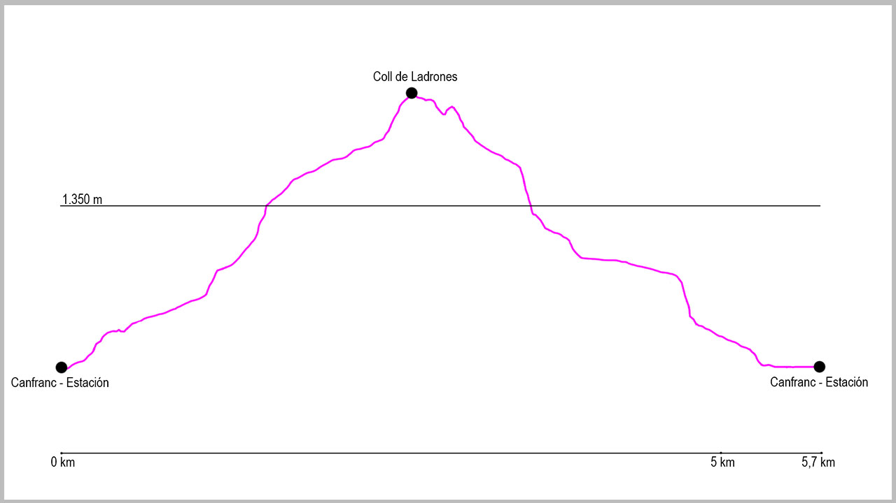

Desde el puente de la Estación de Canfranc, cogeremos la calle principal en dirección norte. Al llegar al final del pueblo seguiremos por el arcén derecho, y justo al pasar la boca española del Túnel de Somport sale un pequeño camino que va paralelo a la carrera. Lo tomaremos y a escasos 200 metros llegaremos a un primer puente que cruza el río Aragón y desde donde sale la pista que tomaremos.
Nada más pasar el puente giraremos a nuestra izquierda por un camino que va paralelo al río. Pasaremos y dejaremos a nuestra derecha un edificio tipo nave y cogeremos el camino que asciende. Al poco tiempo llegaremos a una bifurcación y cogeremos el camino de nuestra derecha. Seguiremos por este sendero hasta que salimos de nuevo a una pista, donde giraremos a nuestra izquierda por los restos de una antigua pista, paro poco después, a unos 50 metros, tomar otro camino poco marcado a nuestra derecha. Este sendero remonta por una zona de piedra suelta hasta coger de nuevo la pista que nos llevará hasta el fuerte de Coll de Ladrones.
Seguiremos por ella en dirección este, y tras una pequeña zona de bajada llegaremos a un cruce a nuestra derecha que obviaremos, siguiendo recto hasta llegar a un puente que cruza el río Izas. Al cruzarlo, el camino asciende hasta llegar a otro cruce, que también dejaremos a nuestra derecha, para seguir entonces en dirección noroeste a nuestra izquierda.
Pasaremos entonces un antiguo refugio forestal y un campo para empezar a bajar hasta llegar a un depósito de agua y poco después al cruce con el camino de Santiago. Este momento será el punto de regreso de nuestra ruta. Cogeremos esta bifurcación a la izquierda y la seguiremos en dirección sur. Sin ningún tipo de pérdida, nos conducirá de nuevo hasta el punto de inicio de la pista de Coll de Ladrones, y posteriormente, por el arcén de la carretera, hasta el punto de partida.
